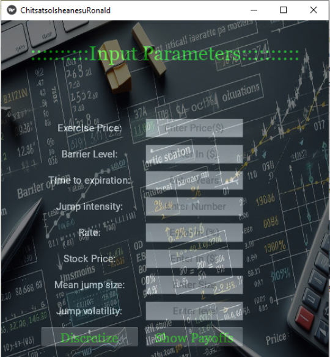

Financial Engineering student at Harare Institute of Technology.
As Financial Engineer I believe in data and numbers since there are reasons behind them.
This belief has grown into a deep passion over the past few years to find hidden patterns in big data.
Now, looking for an opportunity to work with my passion until I retire.

I used a dataset of 21,000 properties to determine if real estate prices are
influenced more by property size or location. Importing and cleaning data from a
CSV file, build data visualizations, and examine the relationship between two
variables using correlation.

This project aims to predict loan applicant defaulting for a company using
machine learning techniques. Problem statement: Financial institutions face
significant risks due to loan defaults. Accurately predicting probability of
default on loans is critical for risk management and strategic planning..

I created a GARCH time series model to predict asset volatility. I acquired
stock data through an API, clean and store it in a SQLite database, and build
API to serve model predictions.

I conducted a chi-square test to determine if sending an email can increase
program enrollment at WQU. I build custom Python classes to implement an ETL
process, and creating an interactive data application following a three-tiered
design pattern..

I built a k-means model to cluster US consumers into groups. I used principal
component analysis (PCA) for data visualization, and I created an interactive
dashboard with Plotly Dash.

I built random forest and gradient boosting models to predict whether a company
will go bankrupt. I navigated the Linux command line, address imbalanced data
through resampling, and consider the impact of performance metrics precision and
recall.

I built logistic regression and decision tree models to predict earthquake damage
to buildings. I extracted data from a SQLite database, and reveal the biases in
data that can lead to discrimination.

I built an ARMA time-series model to predict particulate matter levels in Kenya.
I extracted data from a MongoDB database using pymongo, and improve model
performance through hyperparameter tuning.

I built a linear regression model to predict apartment prices in Argentina. I created
a data pipeline to impute missing values and encode categorical features, and
they improve model performance by reducing over-fitting.

Pricing of options is essential, path-depended options face challenge on solving
PDE's or SDE's, barrier options face same problem as the barrier is introduced.
The project is on famous 1912 titanic accident, deducing an explanation on what made
other people to survive and others failing. Problem statement : What sorts of
people were more likely to survive?

Proficient in Python programming, with experience in [data analysis,machine learning].
Skilled in utilizing Python libraries and frameworks for [specific tasks, e.g.,
data manipulation, web application development, model building].

Proficient in Python programming with a strong emphasis on data analysis and visualization.
Experienced in utilizing Python libraries such as NumPy, Pandas, Matplotlib, and
Seaborn for data manipulation, exploration, and creating compelling visual
representations. Skilled in crafting informative and aesthetically pleasing
visualizations to uncover trends, patterns, and insights within complex datasets.

Proficient in SQL for data retrieval and management. Capable of writing efficient
SQL queries to extract, clean, and transform data from relational databases.

Excel VBA skills for automating tasks, creating custom functions, and enhancing
data analysis capabilities within the Excel environment. Experienced in developing
VBA macros to streamline workflows and improve productivity.